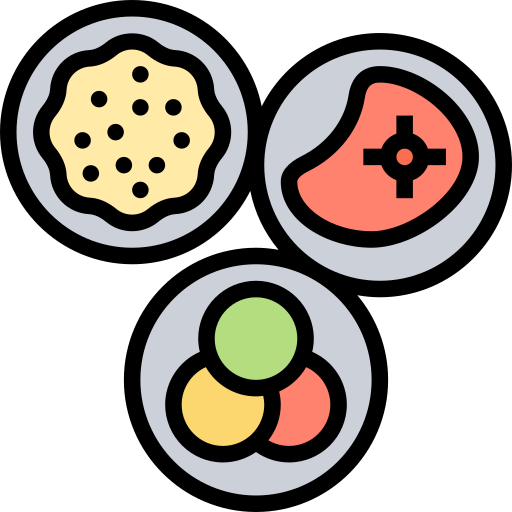

Receita
Ingredientes 
- 500 g de morangos limpos e secos
- 01 xícara de chá de açúcar cristal
 01 colher de sopa de suco de limão
01 colher de sopa de suco de limão- 02 xícaras de chá de creme de leite gelado
Modo de preparo
Amasse os morangos com um garfo e leve ao fogo com o açúcar e o suco de limão até que fiquem macios (cerca de 5 minutos);
Passe para uma tigela e leve à geladeira até ficar bem frio;
Junte o creme de leite gelado, cubra com filme plástico e leve ao freezer por 2 a 3 horas ou até formar uma borda congelada de 3 a 4 cm;
Bata a mistura na batedeira por cerca de 10 minutos ou até ficar cremoso e congele novamente até formar uma nova borda;
Bata outra vez por 6 a 8 minutos ou até ficar bem cremoso;
Leve de volta ao freezer bem tampado por cerca de 8 horas ou até ficar consistente. Retire 7 a 10 minutos antes de servir.